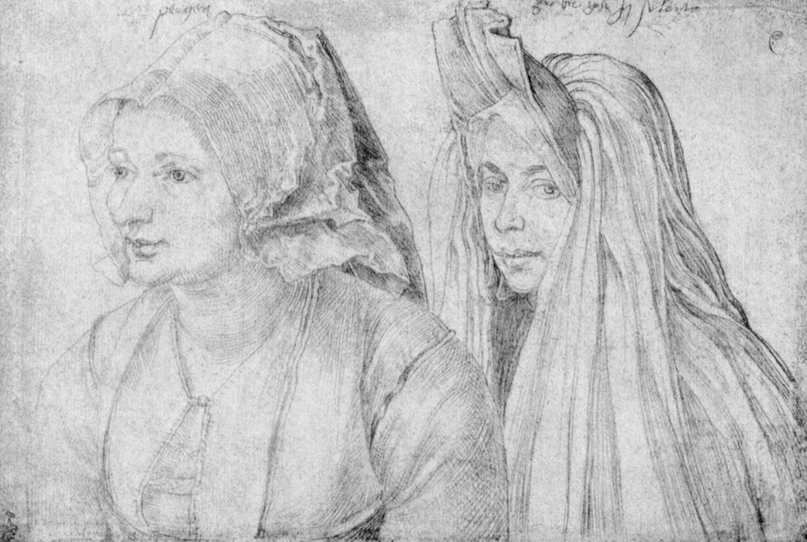

Albrecht Durer,1471 - 1528,Northern Renaissance,German,"Albrecht Dürer (; German: [ˈʔalbʁɛçt ˈdyːʁɐ]; 21 May 1471 – 6 April 1528) sometimes spelt in English as Durer or Duerer, without umlaut, was a painter, printmaker, and theorist of the German Renaissance. Born in Nuremberg, Dürer established his reputation and influence across Europe when he was still in his twenties due to his high-quality woodcut prints.",http://en.wikipedia.org/wiki/Albrecht_Dürer,328
